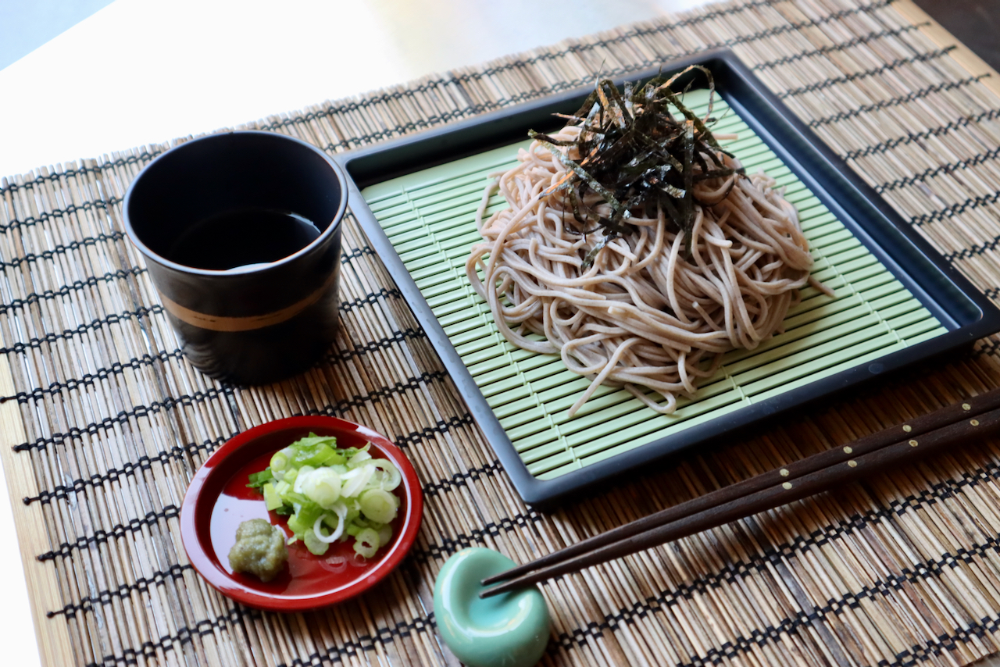

Zaru Soba (ざるそば) is cold buckwheat noodles with dipping sauce. It is a cool noodle dish often served in summer in Japan. Zaru means a colander or a strainer in Japanese, and cold Soba noodles are usually served on a slotted bamboo mat that lets water drip through. Zaru Soba is a great dish to beat brutal summer heat and humidity in Japan.
Soba is a popular Japanese food in the US, and dried Soba noodles can be found at most supermarkets here. One reason why Soba is popular here is because Soba is much healthier than other noodles made from refined flours. Soba has fewer calories and more nutrients such as vitamin B, various minerals, and fiber. Another reason is that Soba doesn’t contain any gluten. Diet restrictions and the recent gluten-free diet fever may also be contributing to the popularity of Soba noodles.
Not only is Soba healthy, but it tastes great, of course. It has a wheaty, nutty, wholesome flavor. It can be wonderful in hot soup too. Hot Soba is for anytime, but there is a special dish eaten on New Year’s Eve called Toshikoshi Soba. Because Soba noodles have no gluten, they can be cut more easily than other noodles. It is believed that eating Soba will cut misfortune of the previous year and bring good luck in the next year.
Freshly made Soba noodles are the best, but, unfortunately, it’s often hard to find fresh Soba in the US. At many Soba restaurants, cold Soba is often served with Sobayu, the hot water the Soba was cooked in, so that you can add it to any leftover dipping sauce and drink it. If you have a chance to visit real Soba restaurants, you may want to try it. We hope you can find frozen Soba noodles at Japanese supermarkets, because that may be the next best option, but it may not available to everyone. But don’t worry, today’s dried Soba noodles are quite good too. There are a few kinds of dried Soba at markets. Some Soba is made with 100% Soba buckwheat flour. These noodles may have a rough texture although they have a full Soba flavor. When Soba noodles are made from mixture of some buckwheat flour and regular wheat flour and/or even yam, the texture is smoother and a little bit easier to eat. So check the ingredients before choosing which noodles you want to try.
Zaru Soba is such a perfect dish to eat when you don’t have much appetite in warm weather. People enjoy the cool sensation of the noodles going down their throat smoothly rather than chewing it well, although you can still taste the aroma of Soba in your mouth. Try this easy, healthy, and delicious cold noodle dish at home!